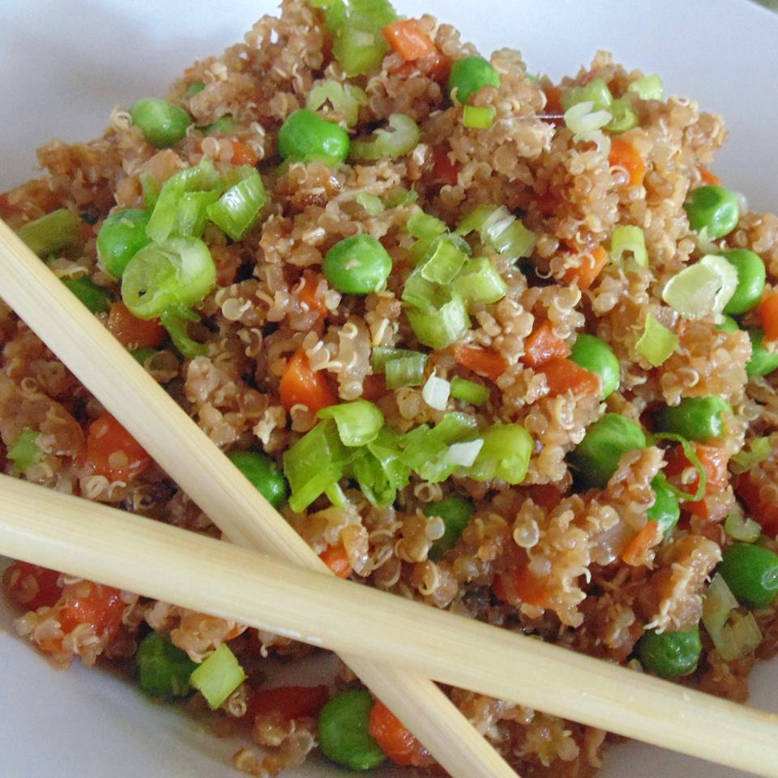

Quinoa Fried Rice

Description
- Great side dish and substitute for fried rice.
Ingredients
-
- Quinoa
- 1 & 1/2 cups water
- 1 cup quinoa
- Salt to taste
- Sauce
- 2 & 1/2 tablespoons soy sauce
- 1 & 1/2 tablespoons teriyaki sauce
- 3/4 teaspoon sesame oil
- Fried Quinoa
- 1 tablespoon olive oil, divided
- 2 carrots, peeled and chopped
- 1/4 onion, chopped
- 3 scallions, chopped, divided
- 3 cloves garlic, minced
- 1/2 teaspoon minced fresh ginger
- 1/2 cup frozen peas
Steps
-
- Bring water and quinoa to a boil in a saucepan; season with salt.
Reduce heat to medium-low, cover, and simmer until quinoa is tender and water has been absorbed, 15 to 20 minutes.
Remove saucepan from heat and let sit for 5 minutes; fluff quinoa with a fork.
Refrigerate until cool, 8 hours to overnight.
- Mix soy sauce, teriyaki sauce, and sesame oil together in a bowl until sauce is evenly mixed.
- Heat 1 1/2 teaspoons oil in a large skillet over high heat; saute carrots and onion for 2 minutes.
Add 2 scallions, garlic, and ginger; saute until fragrant, about 2 minutes more.
Add the remaining 1 1/2 teaspoons oil and quinoa; cook until heated through, about 2 minutes.
- Stir sauce into quinoa mixture; add peas and cook and stir until evenly coated, about 2 minutes.
- Cook until heated through, 2 to 3 minutes. Add remaining scallion.